The NWChem plane-wave (NWPW) module uses pseudopotentials and plane-wave basis sets to perform Density Functional Theory calculations. This module complements the capabilities of the more traditional Gaussian function based approaches by having an accuracy at least as good for many applications, yet is still fast enough to treat systems containing hundreds of atoms. Another significant advantage is its ability to simulate dynamics on a ground state potential surface directly at run-time using the Car-Parrinello algorithm. This method's efficiency and accuracy make it a desirable first principles method of simulation in the study of complex molecular, liquid, and solid state systems. Applications for this first principles method include the calculation of free energies, search for global minima, explicit simulation of solvated molecules, and simulations of complex vibrational modes that cannot be described within the harmonic approximation.
The NWPW module is a collection of three modules.
Section 35.1 describes the tasks contained within the PSPW module, section 35.2 describes the tasks contained within the Band module, section 35.3 describes the tasks contained within the PAW module, and section 35.4 describes the pseudopotential library included with NWChem. The datafiles used by the PSPW module are described in section 35.5. Car-Parrinello output data files are described in section 35.5.7, and the minimization and Car-Parrinello algorithms are described in section 35.6. Examples of how to setup and run a PSPW geometry optimization, a Car-Parrinello simulation, a band structure minimization, and a PAW geometry optimization are presented in sections 35.7, 35.8, and 35.10, and 35.11. Finally in section 35.12 the capabilities and limitations of the NWPW module are discussed.
If you are a first time user of this module it is recommended that you skip the next five sections and proceed directly to the tutorials in sections 35.7-35.11.
All input to the PSPW Tasks is contained within the compound PSPW block,
PSPW ... END
To perform an actual calculation a TASK PSPW directive is used (Section 5.10).
TASK PSPWIn addition to the directives listed in Section 5.10, i.e.
TASK pspw energy TASK pspw gradient TASK pspw optimize TASK pspw saddle TASK pspw freqencies TASK pspw vibthere are additional directives that are specific to the PSPW module, which are:
TASK PSPW [Car-Parrinello ||
pspw_dplot ||
wannier ||
psp_generator ||
steepest_descent ||
psp_formatter ||
wavefunction_initializer ||
v_wavefunction_initializer ||
wavefunction_expander ]
Once a user has specified a geometry, the PSPW module can be invoked with no input directives (defaults invoked throughout). However, the user will probably always specify the simulation cell used in the computation, since the default simulation cell is not well suited for most systems. There are sub-directives which allow for customized application; those currently provided as options for the PSPW module are:
PSPW CELL_NAME <string cell_name default 'cell_default'> INPUT_WAVEFUNCTION_FILENAME <string input_wavefunctions default input_movecs> OUTPUT_WAVEFUNCTION_FILENAME <string output_wavefunctions default input_movecs> FAKE_MASS <real fake_mass default 400000.0> TIME_STEP <real time_step default 5.8> LOOP <integer inner_iteration outer_iteration default 10 100> TOLERANCES <real tole tolc default 1.0e-7 1.0e-7> ENERGY_CUTOFF <real ecut default (see input description)> WAVEFUNCTION_CUTOFF <real wcut default (see input description)> EWALD_NCUT <integer ncut default 1>] EWALD_RCUT <real rcut default (see input description)> XC (Vosko || PBE96 default Vosko) DFT||ODFT||RESTRICTED||UNRESTRICTED MULT <integer mult default 1> MULLIKEN ALLOW_TRANSLATION SIMULATION_CELL ... (see input description) END DPLOT ... (see input description) END WANNIER ... (see input description) END CAR-PARRINELLO ... (see input description) END PSP_GENERATOR ... (see input description) END WAVEFUNCTION_INITIALIZER ... (see input description) END V_WAVEFUNCTION_INITIATIZER ... (see input description) END WAVEFUNCTION_EXPANDER ... (see input description) END STEEPEST_DESCENT ... (see input description) END END
The following list describes the keywords contained in the PSPW input block.
A prototype limited memory BFGS (LMBFGS) minimizer can be used to minimize the energy. To use this new optimizer the following SET directive needs to be specified:
set nwpw:mimimizer 1 # Default - Grassman conjugate gradient minimizer is used to minimize the energy. set nwpw:mimimizer 2 # Grassman LMBFGS minimimzer is used to minimize the energy. set nwpw:minimizer 4 # Stiefel conjugate gradient minimizer is used to minimize the energy. set nwpw:minimizer 5 # Band-by-band minimizer is used to minimize the energy.Limited testing suggests that the Grassman LMBFGS minimizer is about twice as fast as the conjugate gradient minimizer. However, there are several known cases where this optimizer fails, so it is currently not a default option, and should be used with caution.
In addition the following SET directives can be specified:
set nwpw:lcao_skip .false. # Default - initial wavefunctions generated using an LCAO guess. set nwpw:lcao_skip .true. # Initial wavefunctions generated using a random plane-wave guess. set nwpw:lcao_print .false. # Default - Ouput not produced during the generation of the LCAO guess. set nwpw:lcao_print .true. # Output produced during the generation of the LCAO guess. set nwpw:lcao_iterations 2 #specifies the number of LCAO iterations
PSPW
...
SIMULATION_CELL
CELL_NAME <string name default 'cell_default'>
BOUNDARY_CONDITIONS (periodic || aperiodic default periodic)
LATTICE_VECTORS
<real a1.x a1.y a1.z default 20.0 0.0 0.0>
<real a2.x a2.y a2.z default 0.0 20.0 0.0>
<real a3.x a3.y a3.z default 0.0 0.0 20.0>
NGRID <integer na1 na2 na3 default 32 32 32>
END
...
END
Basically, the user needs to enter the dimensions, gridding and boundary
conditions of the simulation cell. The following list describes the
input in detail.
Alternatively, instead of explicitly entering lattice vectors, users can enter the unit cell using the standard cell parameters, a, b, c, 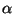, 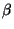, and 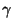, by using the LATTICE block. The format for input is as follows:
PSPW
...
SIMULATION_CELL
...
LATTICE
[lat_a <real a default 20.0>]
[lat_b <real b default 20.0>]
[lat_c <real c default 20.0>]
[alpha <real alpha default 90.0>]
[beta <real beta default 90.0>]
[gamma <real gamma default 90.0>]
END
...
END
...
END
The user can also enter the lattice vectors of standard unit cells using the keywords SC, FCC, BCC, for simple cubic, face-centered cubic, and body-centered cubic respectively. Listed below is an example of the format of this type of input.
PSPW
...
SIMULATION_CELL
SC 20.0
....
END
...
END
Finally, the lattice vectors from the unit cell can also be defined using the fractional coordinate input in the GEOMETRY input (see section 6.7). Listed below is an example of the format of this type of input for an 8 atom silicon carbide unit cell.
geometry units au
system crystal
lat_a 8.277d0
lat_b 8.277d0
lat_c 8.277d0
alpha 90.0d0
beta 90.0d0
gamma 90.0d0
end
Si -0.50000d0 -0.50000d0 -0.50000d0
Si 0.00000d0 0.00000d0 -0.50000d0
Si 0.00000d0 -0.50000d0 0.00000d0
Si -0.50000d0 0.00000d0 0.00000d0
C -0.25000d0 -0.25000d0 -0.25000d0
C 0.25000d0 0.25000d0 -0.25000d0
C 0.25000d0 -0.25000d0 0.25000d0
C -0.25000d0 0.25000d0 0.25000d0
end
The PSPW module using the DRIVER geometry optimizer can optimize a crystal unit cell. Currently this type of optimization works only if the geometry is specified in fractional coordinates. The following SET directive is used to tell the DRIVER geometry optimizer to optimize the crystal unit cell in addition to the geometry.
set includestress .true.
PSPW
...
DPLOT
...
END
...
END
To run a DPLOT calculation the following directive
is used:
TASK PSPW PSPW_DPLOTListed below is the format of a DPLOT sub-block.
PSPW
...
DPLOT
VECTORS <string input_wavefunctions default input_movecs>
DENSITY [total||difference||alpha||beta||laplacian||potential default total] <string density_name no default>
ELF [restricted|alpha|beta] <string elf_name no default>
ORBITAL <integer orbital_number no default> <string orbital_name no default>
[LIMITXYZ [units <string Units default angstroms>]
<real X_From> <real X_To> <integer No_Of_Spacings_X>
<real Y_From> <real Y_To> <integer No_Of_Spacings_Y>
<real Z_From> <real Z_To> <integer No_Of_Spacings_Z>]
END
...
END
The following list describes the input for the DPLOT sub-block.
VECTORS <string input_wavefunctions default input_movecs>
This sub-directive specifies the name of the molecular orbital file. If the second file is optionally given the density is computed as the difference between the corresponding electron densities. The vector files have to match.
DENSITY [total||difference||alpha||beta||laplacian||potential default total] <string density_name no default>
This sub-directive specifies, what kind of density is to be plotted. The known names for total, difference, alpha, beta, laplacian, and potential.
ELF [restricted|alpha|beta] <string elf_name no default>
This sub-directive specifies that an electron localization function (ELF) is to be plotted.
ORBITAL <integer orbital_number no default> <string orbital_name no default>
This sub-directive specifies the molecular orbital number that is to be plotted.
LIMITXYZ [units <string Units default angstroms>]
<real X_From> <real X_To> <integer No_Of_Spacings_X>
<real Y_From> <real Y_To> <integer No_Of_Spacings_Y>
<real Z_From> <real Z_To> <integer No_Of_Spacings_Z>
By default the grid spacing and the limits of the cell to be plotted are defined by the input wavefunctions. Alternatively the user can use the LIMITXYZ sub-directive to specify other limits. The grid is generated using No_Of_Spacings + 1 points along each direction. The known names for Units are angstroms, au and bohr.
Input to the Wannier task is contained within the Wannier sub-block.
PSPW
...
Wannier
...
END
...
END
To run a Wannier calculation the following directive
is used:
TASK PSPW WannierListed below is the format of a Wannier sub-block.
PSPW
...
Wannier
OLD_WAVEFUNCTION_FILENAME <string input_wavefunctions default input_movecs>
NEW_WAVEFUNCTION_FILENAME <string output_wavefunctions default input_movecs>
END
...
END
The following list describes the input for the Wannier
sub-block.
The SET directive is used to specify the molecular orbitals contribute to the self-interaction-correction (SIC) term.
set pspw:SIC_orbitals <integer list_of_molecular_orbital_numbers>This defines only the molecular orbitals in the list as SIC active. All other molecular orbitals will not contribute to the SIC term.
For example the following directive specifies that the molecular orbitals numbered 1,5,6,7,8, and 15 are SIC active.
set pspw:SIC_orbitals 1 5:8 15or equivalently
set pspw:SIC_orbitals 1 5 6 7 8 15
The following directive turns on self-consistent SIC.
set pspw:SIC_relax .false. # Default - Perturbative SIC calculation set pspw:SIC_relax .true. # Self-consistent SIC calculation
Two types of solvers can be used and they are specified using the following SET directive
set pspw:SIC_solver_type 1 # Default - cutoff coulomb kernel set pspw:SIC_solver_type 2 # Free-space boundary condition kernelThe parameters for the cutoff coulomb kernel are defined by the following SET directives:
set pspw:SIC_screening_radius <real rcut> set pspw:SIC_screening_power <real rpower>
The MULLIKEN option can be used to generate derived atomic point charges from a plane-wave density. This analysis is based on a strategy suggested in the work of P.E. Blochl, J. Chem. Phys. vol. 103, page 7422 (1995). In this strategy the low-frequency components a plane-wave density are fit to a linear combination of atom centered Gaussian functions.
The following SET directives are used to define the fitting.
set pspw_APC:Gc <real Gc_cutoff> # specifies the maximum frequency component of the density to be used in the fitting in units of au. set pspw_APC:nga <integer number_gauss> # specifies the the number of Gaussian functions per atom. set pspw_APC:gamma <real gamma_list> # specifies the decay lengths of each atom centered Gaussian.
We suggest using the following parameters.
set pspw_APC:Gc 2.5 set pspw_APC:nga 3 set pspw_APC:gamma 0.6 0.9 1.35
Input to the Car-Parrinello simulation is contained within the Car-Parrinello sub-block.
PSPW
...
Car-Parrinello
...
END
...
END
To run a Car-Parrinello calculation the following directive is used:
TASK PSPW Car-ParrinelloThe Car-Parrinello sub-block contains a great deal of input, including pointers to data, as well as parameter input. Listed below is the format of a Car-Parrinello sub-block.
PSPW
...
Car-Parrinello
CELL_NAME <string cell_name default 'cell_default'>
INPUT_WAVEFUNCTION_FILENAME <string input_wavefunctions default input_movecs>
OUTPUT_WAVEFUNCTION_FILENAME <string output_wavefunctions default input_movecs>
INPUT_V_WAVEFUNCTION_FILENAME <string input_v_wavefunctions default input_vmovecs>
OUTPUT_V_WAVEFUNCTION_FILENAME <string output_v_wavefunctions default input_vmovecs>
FAKE_MASS <real fake_mass default default 1000.0>
TIME_STEP <real time_step default 5.0>
LOOP <integer inner_iteration outer_iteration default 10 1>
SCALING <real scale_c scale_r default 1.0 1.0>
ENERGY_CUTOFF <real ecut default (see input description)>
WAVEFUNCTION_CUTOFF <real wcut default (see input description)>
EWALD_NCUT <integer ncut default 1>
EWALD_RCUT <real rcut default (see input description)>
XC (Vosko || PBE96 default Vosko)
[Nose-Hoover <real Period_electron Temperature_electrion Period_ion Temperature_ion
default 100.0 298.15 100.0 298.15>]
[SA_decay <real sa_scale_c sa_scale_r default 1.0 1.0>]
XYZ_FILENAME <string xyz_filename default XYZ>
EMOTION_FILENAME <string emotion_filename default EMOTION>
HMOTION_FILENAME <string hmotion_filename default HMOTION>
OMOTION_FILENAME <string omotion_filename default OMOTION>
EIGMOTION_FILENAME <string eigmotion_filename default EIGMOTION>
ION_MOTION_FILENAME <string ion_motion_filename default MOTION>
END
...
END
The following list describes the input for the Car-Parrinello
sub-block.
When a DPLOT sub-block is specified the following SET directive can be used to output dplot data during a Car-Parrinello simulation:
set pspw_dplot:iteration_list <integer list_of_iteration_numbers>The Gaussian cube files specified in the DPLOT sub-block are appended with the specified iteration number.
For example, the following directive specifies that at the 3,10,11,12,13,14,15, and 50 iterations Gaussian cube files are to be produced.
set pspw_dplot:iteration_list 3,10:15,50
SET directive (Section 6.6) is used to freeze
atoms, by specifying a directive of the form:
set geometry:actlist <integer list_of_center_numbers>This defines only the centers in the list as active. All other centers will have zero force assigned to them, and will remain frozen at their starting coordinates during a Car-Parrinello simulation.
For example, the following directive specifies that atoms numbered 1, 5, 6, 7, 8, and 15 are active and all other atoms are frozen:
set geometry:actlist 1 5:8 15or equivalently,
set geometry:actlist 1 5 6 7 8 15
If this option is not specified by entering a SET directive,
the default behavior in the code is to treat all atoms as active. To
revert to this default behavior after the option to define frozen
atoms has been invoked, the UNSET directive must be used (since
the database is persistent, see Section 3.2). The form
of the UNSET directive is as follows:
unset geometry:actlist
In addition, the Car-Parrinello module allows users to freeze bond
lengths via a Shake algorithm. The following SET directive
shows how to do this.
set nwpw:shake_constraint "2 6 L 6.9334"This input fixes the bond length between atoms 2 and 6 to be 6.9334 bohrs. Note that this input only recognizes bohrs.
When using constraints it is usually necessary to turn off
center of mass shifting. This can be done by the following SET directive.
set nwpw:com_shift .false.
Input to the PSP_GENERATOR task is contained within the PSP_GENERATOR sub-block.
PSPW
...
PSP_GENERATOR
...
END
...
END
To run a PSP_GENERATOR calculation the following directive
is used:
TASK PSPW PSP_GENERATORListed below is the format of a PSP_GENERATOR sub-block.
PSPW
...
PSP_GENERATOR
PSEUDOPOTENTIAL_FILENAME: <string psp_name>
ELEMENT: <string element>
CHARGE: <real charge>
MASS_NUMBER: <real mass_number>
ATOMIC_FILLING: <integer ncore nvalence>
( (1||2||...) (s||p||d||f||...) <real filling> \
...)
[CUTOFF: <integer lmax>
( (s||p||d||f||g) <real rcut>\
...)
]
PSEUDOPOTENTIAL_TYPE: (TROULLIER-MARTINS || HAMANN default HAMANN)
SOLVER_TYPE: (PAULI || SCRHODINGER default PAULI)
EXCHANGE_TYPE: (dirac || PBE96 default DIRAC)
CORRELATION_TYPE: (VOSKO || PBE96 default VOSKO)
[SEMICORE_RADIUS: <real rcore>]
end
...
END
The following list describes the input for the PSP_GENERATOR
sub-block.
For example to define a pseudopotential for the Neon atom in the 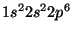 state could have the block
ATOMIC_FILLING: 1 2
1 s 2.0 #core state - 1s^2
2 s 2.0 #valence state - 2s^2
2 p 6.0 #valence state - 2p^6
for a pseudopotential with a 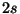 and 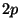 valence electrons
or the block
ATOMIC_FILLING: 3 0
1 s 2.0 #core state
2 s 2.0 #core state
2 p 6.0 #core state
could be used for a pseudopotential with no valence electrons.
For example to define a softened Hamann pseudopotential for Carbon would be
ATOMIC_FILLING: 1 2 1 s 2.0 2 s 2.0 2 p 2.0 CUTOFF: 2 s 0.8 p 0.85 d 0.85while a similarly softened Troullier-Marting pseudopotential for Carbon would be
ATOMIC_FILLING: 1 2 1 s 2.0 2 s 2.0 2 p 2.0 CUTOFF: 2 s 1.200 p 1.275 d 1.275
The implementation in the PSPW module defines the semi-core density,
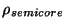 in terms of
the core density, 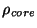, by using the sixth-order polynomial
| 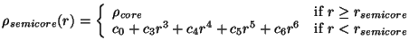 | (35.1) |
The wavefunction_initializer task is used to generate an initial wavefunction datafile. Input to the WAVEFUNCTION_INITIALIZER task is contained within the WAVEFUNCTION_INITIALIZER sub-block.
PSPW
...
WAVEFUNCTION_INITIALIZER
...
END
...
END
To run a WAVEFUNCTION_INITIALIZER calculation the following directive
is used:
TASK PSPW WAVEFUNCTION_INITIALIZERListed below is the format of a WAVEFUNCTION_INITIALIZER sub-block.
PSPW
...
WAVEFUNCTION_INITIALIZER
CELL_NAME: <string cell_name>
WAVEFUNCTION_FILENAME: <string wavefunction_name default input_movecs>
(RESTRICTED||UNRESTRICTED)
if (RESTRICTED)
RESTRICTED_ELECTRONS: <integer restricted electrons>
if (UNRESTRICTED)
UP_ELECTRONS: <integer up_electrons>
DOWN_ELECTRONS: <integer down_electrons>
END
...
END
The following list describes the input for the WAVEFUNCTION_INITIALIZER
sub-block.
For backward compatibility, the input to the WAVEFUNCTION_INITIALIZER sub-block can also be of the form
PSPW
...
WAVEFUNCTION_INITIALIZER
CELL_NAME: <string cell_name>
WAVEFUNCTION_FILENAME: <string wavefunction_name default input_movecs>
(RESTRICTED||UNRESTRICTED)
[UP_FILLING: <integer up_filling>
[0 0 0 0]
{<integer kx ky kz> (-2||-1||1||2)}]
[DOWN_FILLING: <integer down_filling>
[0 0 0 0]
{<integer kx ky kz> (-2||-1||1||2)}]
END
...
END
where
The values for the planewave
 are used to represent whether
the specified planewave is a cosine or a sine function, in addition
random noise can be added to these base functions. That is 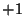
represents a cosine function, and 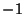 represents a sine function.
The 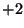 and 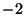 values are used to represent a cosine function with
random components added and a sine function with random components
added respectively.
are used to represent whether
the specified planewave is a cosine or a sine function, in addition
random noise can be added to these base functions. That is 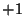
represents a cosine function, and 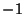 represents a sine function.
The 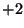 and 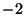 values are used to represent a cosine function with
random components added and a sine function with random components
added respectively.
The v_wavefunction_initializer task is used to generate an initial velocity wavefunction datafile. Input to the V_WAVEFUNCTION_INITIALIZER task is contained within the V_WAVEFUNCTION_INITIALIZER sub-block.
PSPW
...
V_WAVEFUNCTION_INITIALIZER
...
END
...
END
To run a V_WAVEFUNCTION_INITIALIZER calculation the following directive
is used:
TASK PSPW WAVEFUNCTION_INITIALIZERListed below is the format of a V_WAVEFUNCTION_INITIALIZER sub-block.
PSPW
...
V_WAVEFUNCTION_INITIALIZER
V_WAVEFUNCTION_FILENAME: <string v_wavefunction_name default input_vmovecs>
CELL_NAME: <string cell_name>
(RESTRICTED||UNRESTRICTED)
UP_FILLING: <integer up_filling>
DOWN_FILLING: <integer down_filling>
END
...
END
The following list describes the input for the V_WAVEFUNCTION_INITIALIZER
sub-block.
The wavefunction_expander task is used to convert a new wavefunction file that spans a larger grid space from an old wavefunction file. Input to the WAVEFUNCTION_EXPANDER task is contained within the WAVEFUNCTION_EXPANDER sub-block.
PSPW
...
WAVEFUNCTION_EXPANDER
...
END
...
END
To run a WAVEFUNCTION_EXPANDER calculation the following directive
is used:
TASK PSPW WAVEFUNCTION_EXPANDERListed below is the format of a WAVEFUNCTION_EXPANDER sub-block.
PSPW
...
WAVEFUNCTION_EXPANDER
OLD_WAVEFUNCTION_FILENAME: <string old_wavefunction_name default input_movecs>
NEW_WAVEFUNCTION_FILENAME: <string new_wavefunction_name default input_movecs>
NEW_NGRID: <integer na1 na2 na3>
END
...
END
The following list describes the input for the WAVEFUNCTION_EXPANDER
sub-block.
The steepest_descent task is used to optimize the one-electron orbitals with respect to the total energy. In addition it can also be used to optimize geometries. This method is meant to be used for coarse optimization of the one-electron orbitals.
Input to the steepest_descent simulation is contained within the steepest_descent sub-block.
PSPW
...
STEEPEST_DESCENT
...
END
...
END
To run a steepest_descent calculation the following directive is used:
TASK PSPW steepest_descentThe steepest_descent sub-block contains a great deal of input, including pointers to data, as well as parameter input. Listed below is the format of a STEEPEST_DESCENT sub-block.
PSPW
...
STEEPEST_DESCENT
CELL_NAME <string cell_name>
[GEOMETRY_OPTIMIZE]
INPUT_WAVEFUNCTION_FILENAME <string input_wavefunctions default input_movecs>
OUTPUT_WAVEFUNCTION_FILENAME <string output_wavefunctions default input_movecs>
FAKE_MASS <real fake_mass default 400000.0>
TIME_STEP <real time_step default 5.8>
LOOP <integer inner_iteration outer_iteration default 10 1>
TOLERANCES <real tole tolc tolr default 1.0d-9 1.0d-9 1.0d-4>
ENERGY_CUTOFF <real ecut default (see input desciption)>
WAVEFUNCTION_CUTOFF <real wcut default (see input description)>
EWALD_NCUT <integer ncut default 1>
EWALD_RCUT <real rcut default (see input description)>
XC (Vosko || PBE96 default Vosko)
[MULLIKEN]
END
...
END
The following list describes the input for the STEEPEST_DESCENT
sub-block.
All input to the Band Tasks is contained within the compound NWPW block,
NWPW ... END
To perform an actual calculation a TASK Band directive is used (Section 5.10).
TASK Band
Once a user has specified a geometry, the Band module can be invoked with no input directives (defaults invoked throughout). There are sub-directives which allow for customized application; those currently provided as options for the Band module are:
NWPW CELL_NAME <string cell_name default 'cell_default'> ZONE_NAME <string zone_name default 'zone_default'> INPUT_WAVEFUNCTION_FILENAME <string input_wavefunctions default input_movecs> OUTPUT_WAVEFUNCTION_FILENAME <string output_wavefunctions default input_movecs> FAKE_MASS <real fake_mass default 400000.0> TIME_STEP <real time_step default 5.8> LOOP <integer inner_iteration outer_iteration default 10 100> TOLERANCES <real tole tolc default 1.0e-7 1.0e-7> ENERGY_CUTOFF <real ecut default (see input description)> WAVEFUNCTION_CUTOFF <real wcut default (see input description)> EWALD_NCUT <integer ncut default 1>] EWALD_RCUT <real rcut default (see input description)> EXCHANGE_CORRELATION: (Vosko || PBE96 default Vosko) DFT||ODFT||RESTRICTED||UNRESTRICTED MULT <integer mult default 1> SIMULATION_CELL ... (see input description) END BRILLOUIN_ZONE ... (see input description) END MONKHORST-PACK <real n1 n2 n3 default 1 1 1> ENDThe following list describes these keywords.
NWPW
...
BRILLOUIN_ZONE
ZONE_NAME <string name default 'zone_default'>
(KVECTOR <real k1 k2 k3 no default> <real weight default (see input description)>
...)
END
...
END
The user enters the special points and weights of the
Brillouin zone. The following list describes the input in detail.
All input to the PAW Tasks is contained within the compound NWPW block,
NWPW ... END
To perform an actual calculation the following is used (Section 5.10).
TASK PAW steepest\_descent
Once a user has specified a geometry, the PAW module can be invoked with no input directives (defaults invoked throughout). There are sub-directives which allow for customized application; those currently provided as options for the PAW module are:
NWPW CELL_NAME <string cell_name default 'cell_default'> [GEOMETRY_OPTIMIZE] INPUT_WAVEFUNCTION_FILENAME <string input_wavefunctions default input_movecs> OUTPUT_WAVEFUNCTION_FILENAME <string output_wavefunctions default input_movecs> FAKE_MASS <real fake_mass default 400000.0> TIME_STEP <real time_step default 5.8> LOOP <integer inner_iteration outer_iteration default 10 100> TOLERANCES <real tole tolc default 1.0e-7 1.0e-7> ENERGY_CUTOFF <real ecut default (see input description)> WAVEFUNCTION_CUTOFF <real wcut default (see input description)> EWALD_NCUT <integer ncut default 1>] EWALD_RCUT <real rcut default (see input description)> EXCHANGE_CORRELATION: (Vosko || PBE96 default Vosko) DFT||ODFT||RESTRICTED||UNRESTRICTED MULT <integer mult default 1> SIMULATION_CELL ... (see input description) END ENDThe following list describes these keywords.
A library of pseudopotentials used by PSPW and BAND is currently available in the
directory
$NWCHEM_TOP/src/nwpw/libraryps/pspw_default
The elements listed in the following table are present:
H
-------
Li Be B C N O
------- ------------------
Na Mg Al Si P S Cl
------------------------------------------------------
K Ti Fe Cu Zn Ga Ge As
------------------------------------------------------
Sr
------------------------------------------------------
Pt Au Pb
------------------------------------------------------
The pseudopotential libraries are continually being tested
and added. Also, a stand-alone code is available that allows users
to convert certain pseudopotentials generated with the OPIUM package of Rappe et al.
The user can request additional pseudopotentials as well as the conversion
code from Eric J. Bylaska at (Eric.Bylaska@pnl.gov).
Similarly, a library of PAW basis used by PAW is currently available in the
directory
$NWCHEM_TOP/src/nwpw/libraryps/paw_default
Currently there are not very many elements available for PAW. However, the user can request additional basis sets from Eric J. Bylaska at (Eric.Bylaska@pnl.gov). The elements available are: H, O Al, Sc, V, and Fe.
A preliminary implementation of the HGH pseudopotentials (Hartwigsen, Goedecker, and Hutter) has been implemented into the PSPW module. To access the pseudopotentials the pseudopotentials input block is used. For example, to redirect the code to use HGH pseudopotentials for carbon and hydrogen, the following input would be used.
nwpw
...
pseudopotentials
C library HGH_LDA
H library HGH_LDA
end
...
end
The implementation of HGH pseudopotentials is rather limited in this release.
HGH pseudopotentials cannot be used to optimize unit cells, and they
do not work with the MULLIKEN option. They also have not yet been implemented
into the BAND structure code.
If you wish to redirect the code to a different directory other than
the default one,
you need to set the environmental variable
NWCHEM_NWPW_LIBRARY
to the new location of the libraryps directory.
The data stored in the one-dimensional pseudopotential file is
character*2 element :: element name integer charge :: valence charge of ion real mass :: mass of ion integer lmax :: maximum angular component real rcut(lmax) :: cutoff radii used to define pseudopotentials integer nr :: number of points in the radial grid real dr :: linear spacing of the radial grid real r(nr) :: one-dimensional radial grid real Vpsp(nr,lmax) :: one-dimensional pseudopotentials real psi(nr,lmax) :: one-dimensional pseudowavefunctions real r_semicore :: semicore radius real rho_semicore(nr) :: semicore densityand the format of it is:
[line 1: ] element [line 2: ] charge mass lmax [line 3: ] (rcut(l), l=1,lmax) [line 4: ] nr dr [line 5: ] r(1) (Vpsp(1,l), l=1,lmax) [line 6: ] .... [line nr+4: ] r(nr) (Vpsp(nr,l), l=1,lmax) [line nr+5: ] r(1) (psi(1,l), l=1,lmax) [line nr+6: ] .... [line 2*nr+4:] r(nr) (psi(nr,l), l=1,lmax) [line 2*nr+5:] r_semicore if (r_semicore read) then [line 2*nr+6:] r(1) rho_semicore(1) [line 2*nr+7:] .... [line 3*nr+5:] r(nr) rho_semicore(nr) end if
[line 1: ] n_ion [line 2: ] do ii=1,n_ion [line 2+ii: ] atom_name(ii), x(ii),y(ii),z(ii),vx(ii),vy(ii),vz(ii) end do [line n_ion+3 ] n_nion do ii=1,n_ion [line n_ion+3+ii: ] atom_name(ii), x(ii),y(ii),z(ii), vx(ii),vy(ii),vz(ii) end do [line 2*n_ion+4: ] ....
[line 1: ] it_out, n_ion, omega [line 2: ] time do ii=1,n_ion [line 2+ii: ] x(ii),y(ii),z(ii), vx(ii),vy(ii),vz(ii) end do [line n_ion+3 ] time do do ii=1,n_ion [line n_ion+3+ii: ] x(ii),y(ii),z(ii), vx(ii),vy(ii),vz(ii) end do [line 2*n_ion+4: ] ....
[line 1: ] time, E1,E2,E3,E4,E5,E6,E7,E8, (E9,E10, if Nose-Hoover) [line 2: ] ...
[line 1: ] time [line 2: ] ms,ne(ms),ne(ms) do i=1,ne(ms) [line 2+i: ] (hml(i,j), j=1,ne(ms) end do [line 3+ne(ms): ] time [line 4+ne(ms): ] ....
[line 1: ] time, (eig(i), i=1,number_orbitals) [line 2: ] ...
Car and Parrinello developed a unified scheme for doing ab initio molecular dynamics by combining the motion of the ion cores and a fictitious motion for the Kohn-Sham orbitals of density-functional theory (R. Car and M. Parrinello, Phys. Rev. Lett. 55, 2471, (1985)). At the heart of this method they introduced a fictitious kinetic energy functional for the Kohn-Sham orbitals.
Given this kinetic energy the constrained equations of motion are found
by taking the first variation of the auxiliary Lagrangian.
Which generates a dynamics for the wavefunctions 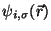 and atoms positions 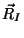 through the constrained equations of motion:
where is the fictitious mass for the electronic degrees of freedom and 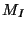 are the ionic masses. The adjustable parameter is used to describe the relative rate at which the wavefunctions change with time. 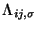 are the Lagrangian multipliers for the orthonormalization of the single-particle orbitals . They are defined by the orthonormalization constraint conditions and can be rigorously found. However, the equations of motion for the Lagrange multipliers depend on the specific algorithm used to integrate Eqs. 35.4-35.5.
For this method to give ionic motions that are physically meaningful the kinetic energy of the Kohn-Sham orbitals must be relatively small when compared to the kinetic energy of the ions. There are two ways where this criterion can fail. First, the numerical integrations for the Car-Parrinello equations of motion can often lead to large relative values of the kinetic energy of the Kohn-Sham orbitals relative to the kinetic energy of the ions. This kind of failure is easily fixed by requiring a more accurate numerical integration, i.e. use a smaller time step for the numerical integration. Second, during the motion of the system a the ions can be in locations where there is an Kohn-Sham orbital level crossing, i.e. the density-functional energy can have two states that are nearly degenerate. This kind of failure often occurs in the study of chemical reactions. This kind of failure is not easily fixed and requires the use of a more sophisticated density-functional energy that accounts for low-lying excited electronic states.
Eqs. 35.4-35.5 integrated using the Verlet algorithm results in
In this molecular dynamic procedure we have to know variational derivative
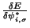 and the matrix
.
The variational derivative
can be analytically found and is
To find the matrix we impose the orthonormality constraint on 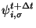 to obtain a matrix Riccatti equation, and then Riccatti equation is solved by an iterative solution
Nose-Hoover Thermostats for the electrons and ions can also be added to the
Car-Parrinello simulation. In this type of simulation thermostats variables 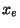 and 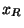
are added to the simulation by adding the auxiliary energy functionals to the total energy.
| 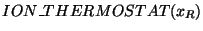 | (35.9) | ||
| (35.10) |
In these equations, the average kinetic energy for the ions is
| (35.11) |
| (35.12) |
Blöchl and Parrinello suggested that the choice of mass parameters,
, and should be made such that the period of oscillating thermostats
should be chosen larger than the typical time scale for the dynamical events of
interest but shorter than the simulation time.
| (35.13) | |||
| (35.14) |
In simulated annealing simulations the electronic and ionic Temperatures are scaled
according to an exponential cooling schedule,
| (35.15) | |||
| (35.16) |
In this section we show how use the PSPW module to optimize the geometry
for a C molecule at the PBE96 levels.
molecule at the PBE96 levels.
In the following example we show the input needed to optimize the geometry
for a C molecule at the LDA level. In this example, default pseudopotentials
from the pseudopotential library are used for C, the boundary condition is free-space,
the exchange correlation functional is PBE96, The boundary condition is free-space, and
the simulation cell cell is aperiodic and cubic with a side length of 10.0 Angstroms and has
40 grid points in each direction (cutoff energy is 44 Ry).
molecule at the LDA level. In this example, default pseudopotentials
from the pseudopotential library are used for C, the boundary condition is free-space,
the exchange correlation functional is PBE96, The boundary condition is free-space, and
the simulation cell cell is aperiodic and cubic with a side length of 10.0 Angstroms and has
40 grid points in each direction (cutoff energy is 44 Ry).
start c2_pspw_pbe96
title "C2 restricted singlet dimer optimization - PBE96/44Ry"
geometry
C -0.62 0.0 0.0
C 0.62 0.0 0.0
end
pspw
simulation_cell units angstroms
boundary_conditions aperiodic
SC 10.0
ngrid 40 40 40
end
xc pbe96
end
set nwpw:minimizer 2
task pspw optimize
In this section we show how use the PSPW module to perform a Car-Parrinello
molecular dynamic simulation for a C molecule at the LDA level.
Before running a PSPW Car-Parrinello simulation the system should be
on the Born-Oppenheimer surface, i.e. the one-electron orbitals should be minimized
with respect to the total energy (i.e. task pspw energy). The input needed
is basically the same as for optimizing the geometry of a C
molecule at the LDA level.
Before running a PSPW Car-Parrinello simulation the system should be
on the Born-Oppenheimer surface, i.e. the one-electron orbitals should be minimized
with respect to the total energy (i.e. task pspw energy). The input needed
is basically the same as for optimizing the geometry of a C molecule at the LDA level,
except that and additional Car-Parrinello sub-block is added.
molecule at the LDA level,
except that and additional Car-Parrinello sub-block is added.
In the following example we show the input needed to run a Car-Parrinello simulation
for a C molecule at the LDA level. In this example, default pseudopotentials
from the pseudopotential library are used for C, the boundary condition is free-space,
the exchange correlation functional is LDA, The boundary condition is free-space, and
the simulation cell cell is aperiodic and cubic with a side length of 10.0 Angstroms and has
40 grid points in each direction (cutoff energy is 44 Ry). The time step and fake mass
for the Car-Parrinello run are specified to be 5.0 au and 600.0 au, respectively.
molecule at the LDA level. In this example, default pseudopotentials
from the pseudopotential library are used for C, the boundary condition is free-space,
the exchange correlation functional is LDA, The boundary condition is free-space, and
the simulation cell cell is aperiodic and cubic with a side length of 10.0 Angstroms and has
40 grid points in each direction (cutoff energy is 44 Ry). The time step and fake mass
for the Car-Parrinello run are specified to be 5.0 au and 600.0 au, respectively.
start c2_pspw_lda_md
title "C2 restricted singlet dimer, LDA/44Ry - constant energy Car-Parrinello simulation"
geometry
C -0.62 0.0 0.0
C 0.62 0.0 0.0
end
pspw
simulation_cell units angstroms
boundary_conditions aperiodic
lattice
lat_a 10.00d0
lat_b 10.00d0
lat_c 10.00d0
end
ngrid 40 40 40
end
Car-Parrinello
fake_mass 600.0
time_step 5.0
loop 10 10
end
end
set nwpw:minimizer 2
task pspw energy
task pspw Car-Parrinello
The following example demonstrates how to uses the PSPW module to optimize the unit cell and geometry for a silicon-carbide crystal.
title "SiC 8 atom cubic cell - geometry and unit cell optimization"
start SiC
#**** Enter the geometry using fractional coordinates ****
geometry units au center noautosym noautoz print
system crystal
lat_a 8.277d0
lat_b 8.277d0
lat_c 8.277d0
alpha 90.0d0
beta 90.0d0
gamma 90.0d0
end
Si -0.50000d0 -0.50000d0 -0.50000d0
Si 0.00000d0 0.00000d0 -0.50000d0
Si 0.00000d0 -0.50000d0 0.00000d0
Si -0.50000d0 0.00000d0 0.00000d0
C -0.25000d0 -0.25000d0 -0.25000d0
C 0.25000d0 0.25000d0 -0.25000d0
C 0.25000d0 -0.25000d0 0.25000d0
C -0.25000d0 0.25000d0 0.25000d0
end
#***** setup the nwpw gamma point code ****
nwpw
simulation_cell
ngrid 16 16 16
end
ewald_ncut 8
end
set nwpw:minimizer 2
set nwpw:psi_nolattice .true. # turns of unit cell checking for wavefunctions
driver
clear
maxiter 40
end
set includestress .true. # this option tells driver to optimize the unit cell
task pspw optimize
The following input deck performs a PSPW energy calculation followed by a Band energy calculation at the -point for a cubic (8-atom) silicon-carbide crystal. Since the geometry is entered using fractional coordinates the unit cell parameters do not have to be re-specified in the simulation_cell nwpw sub-block. In this example, default pseudopotential from the pseudopotential library are used for C and Si. The advantage of running these calculations in tandem is that the Band code uses the wavefunctions generated from the faster PSPW calculation for its initial guess. The PSPW energy is -38.353570, and the Band energy is -38.353570.
start SiC_band
title "SiC 8 atom cubic cell"
#**** geometry entered using fractional coordinates ****
geometry units au center noautosym noautoz print
system crystal
lat_a 8.277d0
lat_b 8.277d0
lat_c 8.277d0
alpha 90.0d0
beta 90.0d0
gamma 90.0d0
end
Si -0.50000d0 -0.50000d0 -0.50000d0
Si 0.00000d0 0.00000d0 -0.50000d0
Si 0.00000d0 -0.50000d0 0.00000d0
Si -0.50000d0 0.00000d0 0.00000d0
C -0.25000d0 -0.25000d0 -0.25000d0
C 0.25000d0 0.25000d0 -0.25000d0
C 0.25000d0 -0.25000d0 0.25000d0
C -0.25000d0 0.25000d0 0.25000d0
end
#***** setup the nwpw gamma point code ****
nwpw
simulation_cell
ngrid 16 16 16
end
brillouin_zone
kvector 0.0 0.0 0.0
end
ewald_ncut 8
end
set nwpw:minimizer 2
set nwpw:psi_brillioun_check .false.
task pspw energy
task band energy
The following input deck performs for a water molecule a PSPW energy calculation followed by a PAW energy calculation and a PAW geometry optimization calculation. The default unit cell parameters are used (SC=20.0, ngrid 32 32 32). In this simulation, the first PAW run optimizes the wavefunction and the second PAW run optimizes the wavefunction and geometry in tandem.
title "paw steepest descent test" start paw_test charge 0 geometry units au nocenter noautoz noautosym O 0.00000 0.00000 0.01390 H -1.49490 0.00000 -1.18710 H 1.49490 0.00000 -1.18710 end nwpw time_step 15.8 ewald_rcut 1.50 tolerances 1.0d-8 1.0d-8 end set nwpw:lcao_iterations 1 set nwpw:minimizer 2 task pspw energy task paw steepest_descent nwpw time_step 5.8 geometry_optimize ewald_rcut 1.50 tolerances 1.0d-7 1.0d-7 1.0d-4 end task paw steepest_descent
Questions and encountered problems should be reported to nwchem-users@emsl.pnl.gov or to Eric J. Bylaska, Eric.Bylaska@pnl.gov